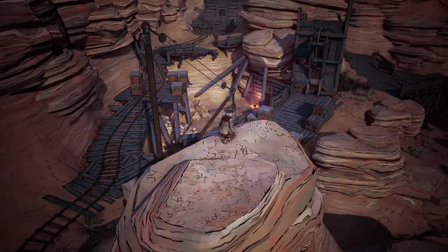
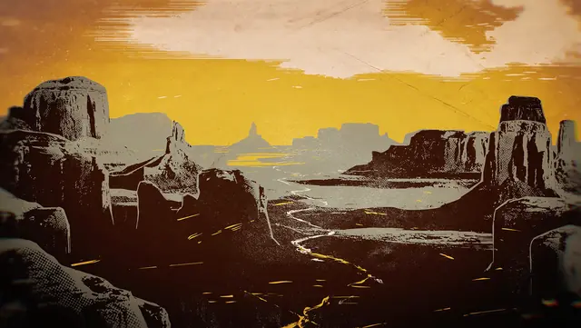
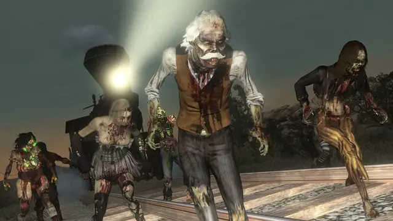
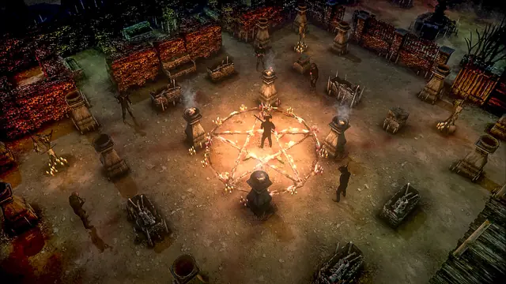
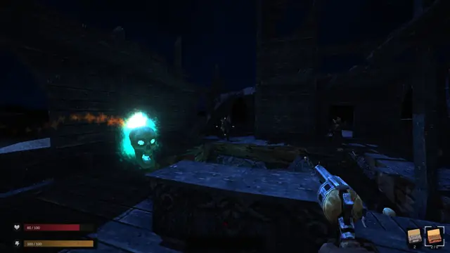
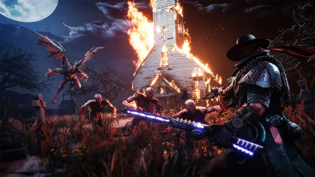
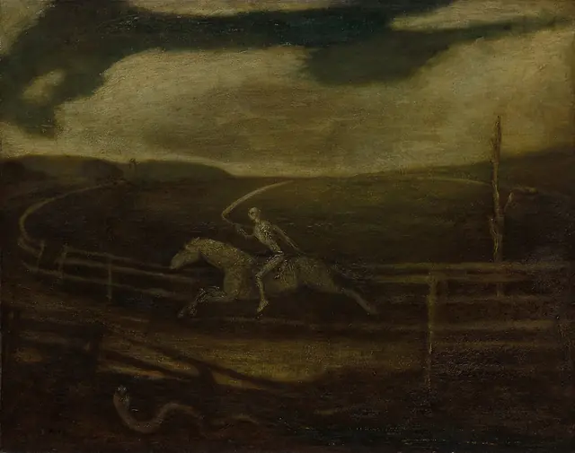
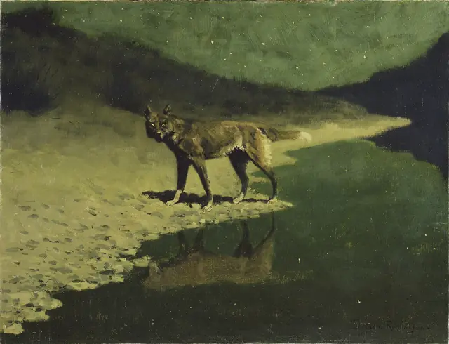
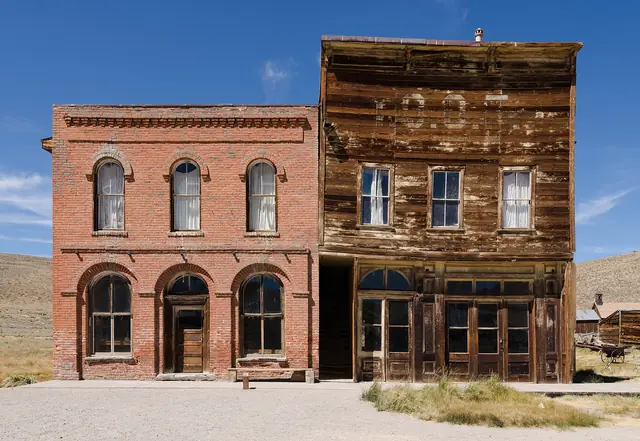

The feel
Weird West mixes the themes, iconography and settings of the western with horror, fantasy, the supernatural or science fiction.1 Shane Hensley, who created the Deadlands roleplaying game, puts it plainly: "spaghetti Western with horror. It's cowboys and zombies."2 Its heroes include Joe R. Lansdale's Reverend Mercer, a preacher who fights zombies, werewolves and cannibals and has more faith in whiskey and guns than in God.3
It works because the west is so familiar. Raphaël Colantonio, creative director of WolfEye's Weird West, likes to start from an environment people know and then "push some buttons to make it weirder and weirder".4 Zack Johnson of West of Loathing thinks the frontier suits a fantasy RPG as well as medieval Europe does: technology anyone can follow, clichéd good and evil, a hostile land to explore, and a focus on fighting and treasure.5 Two games show where the look comes from: Weird West wanted ink-work "like in comic books",6 and Darkwatch's makers found a visual identity of their own by setting gothic horror against western motifs.7
- sun-bleached
- ink-black
- superstitious
- lawless
- dusty
- cursed
Where it comes from
Weird westerns go back to the early days of the magazine Weird Tales.3 DC's Jonah Hex, a scarred bounty hunter created by John Albano and Tony DeZuniga, arrived in 1972,8 and Stephen King counted the spaghetti westerns among the inspirations for his Dark Tower series.9 Deadlands, first shown at Gen Con in 1996, mixed classic western themes with supernatural horror, alternate history and pulp adventure.10 In games, the haunted west was still unexplored when High Moon made a vampire cowboy the hero of Darkwatch,7 and in 2010 Rockstar's Undead Nightmare let a zombie plague loose on the frontier of Red Dead Redemption.11
Core elements
Familiar frontier settings
Start from settings people know. Colantonio likes things that are "relatable and simple and grounded", with an angle added,4 and Evil West's art direction aimed to be familiar enough to recognise, with something that still feels different.12
Horror on the frontier
Evil West plants European vampires in the old American West,12 Undead Nightmare's zombie plague wakes the dead overnight,11 and Hard West's missions are full of cultists, cannibals and black pacts.13
Gothic horror motifs
Darkwatch's team combined gothic horror with western motifs and believed they had found a visual identity they could own.7 Evil West calls itself a "gothic horror, spaghetti western joyride", and its sunsets paint the land blood red while long shadows mingle with crawling monsters.12
Comic-book inking
WolfEye's Weird West names French and Belgian comics as a major influence and set out to show the detail of the ink-work, as comics do.6 The result has hard lines and an almost brush-like colour fill.14
A small, earthy palette
Weird West's palette is earthy and brown, with a small range of colour, yet the art direction keeps everything clear to read.14 West of Loathing goes further, with stick figures in a monochrome palette.5
Cards and wood type
Cards turn up as magic and as mechanics: Deadlands has card-slinging hucksters,2 and Hard West builds special abilities from collected poker cards.13 For print, look to wood type: French Clarendon No. 2 became a popular poster face in the 1870s and 1880s, from Barnum's circus posters to the wanted posters of the old west.15
How to do it
Block out a familiar town
Block out a town players will recognise first, then push it weirder and weirder.4 For Evil West the artists added one or two floors to most buildings, with more balconies and stairways, so the towns loom over you while still resembling the frontier towns of the movies.12
Shade in two bands
Toon shading makes 3D surfaces look like flat 2D ones.16 Run the light term through smoothstep(0, 0.01, NdotL) to split it into two bands, light and dark, with a sharp edge that isn't jagged; a ramp texture gives more bands if you want them. A thresholded rim light, with a rim amount around 0.716, helps silhouettes stand out against the flat shading.16
Ink the outlines
Weird West pairs hard lines with an almost brush-like fill.14 To ink 3D in post, compare the depth and normals of neighbouring pixels and draw an edge where they differ. Widen the line one pixel at a time from a scale of 1, with a depth threshold of 1.5 (multiplied by depth) and a normal threshold of 0.4.17
Use wood type for posters
For wanted posters and notices, use the slab-serif Antique wood types. French Clarendon, introduced in the US in 1865, became a popular poster face in the 1870s and 1880s.15 Rye is a free web font inspired by posters set in wood type.18
Portray Native nations with care
In Weird West, Native Americans are a significant part of the world, and WolfEye found the subject more complex than it had expected. To avoid giving offence, the studio consulted Indigenous groups and added Elizabeth LaPensée, an Anishinaabe and Métis writer, to the team.4
Write a spaghetti western score
With no money for an orchestra on A Fistful of Dollars, Morricone used trumpet, Jew's harp and Fender electric guitar with lots of vibrato, voices played like instruments, whistling, gunshots and horses' hooves.19 Michiko Naruke kept the Wild Arms theme in a range narrow enough to whistle, and gave its darker side a choir singing a hymn in Latin.20 Romantic composers borrowed the Dies irae melody to suggest the supernatural or the macabre.21
Cheat sheet
Do
- Start with a setting players know, then push it weirder and weirder.4
- Let the music set the pace. Morricone said Leone often kept scenes longer because he didn't want the music to end.19
- Record music to picture. Neil Young played his Dead Man score live to a rough cut, over three viewings of the film.22
- Turn the gambling into mechanics, like Hard West's special abilities built from poker cards.13
Avoid
- Brown on brown. With an earthy palette it is easy to lose the line between a roof and the dirt on the ground.14
- Confederate loyalists as heroes. Hensley ended Deadlands' surviving Confederacy partly because CSA loyalists can be very uncomfortable for others at the table.2
- Reusing the western's racial clichés. Scholars of the genre ask whether it challenges the western's racial paradigms or reinforces them, especially in how African American and Native American characters are shown.1
- Losing the western. The pull of the genre is the fantastic set against the familiar "horses, cowboys and gun fighting".3
Tools and tutorials
- Roystan: Toon shader
Step-by-step Unity cel shading with banded light and rim highlights.16
- Blender Grease Pencil
Draw inked 2D lines and fills inside a 3D scene for comic-style key art.
- Rye
A free display face inspired by posters set in wood type.18
- The Book of Shaders
Shaping functions, patterns and noise: the basics behind toon bands and printed grain.
Palette
Ink, bone and mustard from Weird West's key art, red from the Weird Western Tales cover, green from Undead Nightmare, cyan from Blood West's flaming skull and blue from the Darkwatch moon. Click a swatch to copy it.
Feel the vibe
In motion
Listen
From the game's soundtrack. Listen for the dusty guitar with something whispering underneath.
YouTubeFrom Marcin Przybyłowicz's Hard West score; he also wrote for The Witcher 3.13 Dies irae is the Latin hymn of the Last Judgement.21
YouTubeStan Jones, a Death Valley park ranger, based it on the European folklore of the Wild Hunt. Vaughn Monroe's 1949 recording was the first to reach No. 1.23
YouTubeFrom The Good, the Bad and the Ugly, in which three gunslingers compete for buried Confederate gold.24
YouTubeThe same ghost story, sung low and slow. Cash first recorded it on his 1979 album Silver and kept singing it for more than 20 years.23
YouTube
More references









Games
- Darkwatch
A vampire cowboy in a first-person shooter, with gothic horror set against western motifs.7
- Red Dead Redemption: Undead Nightmare
A zombie plague across the whole frontier, with zombie cougars, bears and wolves, and a Blunderbuss loaded with zombie remains.11
- Hard West
Turn-based tactics with cultists, cannibals and black pacts, and abilities crafted from poker cards.13
- West of Loathing
Stick figures in a monochrome palette. Zack Johnson drew the first Loathing art himself because he couldn't afford an artist.5
- Weird West
Ink-work in the manner of French and Belgian comics,6 with hard lines, brush-like fill and an earthy palette.14
- Evil West
European vampires moved to the old West and fought with a lightning-powered gauntlet. Study the blood-red sunsets.12
Film, art and more
- Weird Western Tales
Home of Jonah Hex, who arrived in 1972 "visually fully formed", with half his face scarred.8
- High Plains Drifter
Eastwood's second film as director. His stranger paints "Hell" over the town sign and has the town painted red.25
- The Dark Tower: The Gunslinger
King's inspirations included Browning's "Childe Roland to the Dark Tower Came" and the spaghetti westerns.9
- Dead Man
Jarmusch's surreal monochrome western, scored by Neil Young on electric guitar, recorded live to a rough cut.22
- Deadlands
In Hensley's words: cowboys and zombies and card-slinging hucksters, steampunk and mad science.2
- Hamilton Wood Type & Printing Museum
Hamilton was America's largest wood type maker. The museum holds 1.5 million pieces of type.26
- Shadows of Brimstone: City of the Ancients
Old West heroes such as the Gunslinger, Saloon Girl and Preacher fight demons in the mines,27 drawn by artists hired to picture this wild-west-meets-pulp-otherworldly-horror.28
Sources
- 1CFP: Race and Gender in the Weird Western (critical collection)
- 2The Morgana Effect and the CSA
- 3Mosey on Up to a Weird Western Shindig
- 4Weird West Developer WolfEye Is Putting Player Agency at the Center of Its Dark Immersive Sim
- 5Designing the deceptively simple stick figure RPG West of Loathing
- 6Weird West preview and devchat showcases a stunning immersive world ready to be explored
- 7The Untold Story Of Darkwatch, An Interview With The Creators Of High Moon Studios
- 8DC Histories: Jonah Hex
- 9The Dark Tower I: The Gunslinger (Revised) - Inspiration
- 10Deadlands 30th Anniversary on Kickstarter – Creator Interview
- 11Undead Nightmare pack coming to Red Dead Redemption October 26th
- 12Explore the Weird West in Evil West, Available Now on Xbox One and Xbox Series X|S
- 13Hard West Brings Tactics to the Weird West – Available Now
- 14Weird West is a western RPG that lets players pick their poison
- 15Wood Type: French Clarendon No. 2
- 16Toon Shader
- 17Outline Shader
- 18Rye
- 19Obituary: Ennio Morricone, maestro behind 'spaghetti western' soundtracks
- 20Michiko Naruke's Wild Arms, From Console to Stage
- 21Dies irae
- 22The strange beauty of Neil Young’s Dead Man soundtrack
- 23The Hellish Cowboy Standard Covered by Elvis Presley, Johnny Cash, Willie Nelson, and More (1949-2018)
- 24Ennio Morricone: the 10 Best Movie Soundtracks
- 25High Plains Drifter (1973)
- 26About
- 27Shadows of Brimstone
- 28Shadows of Brimstone v1